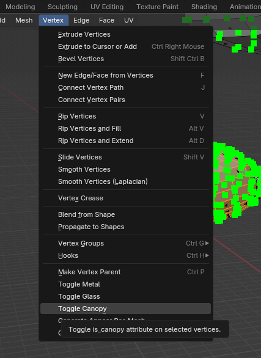
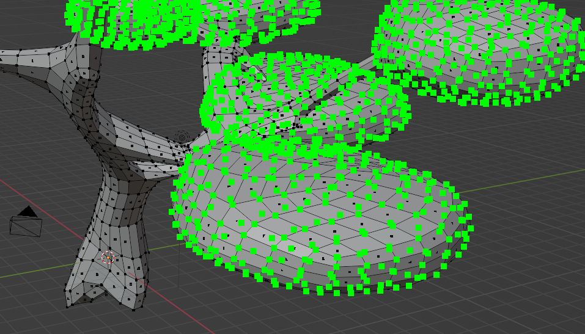
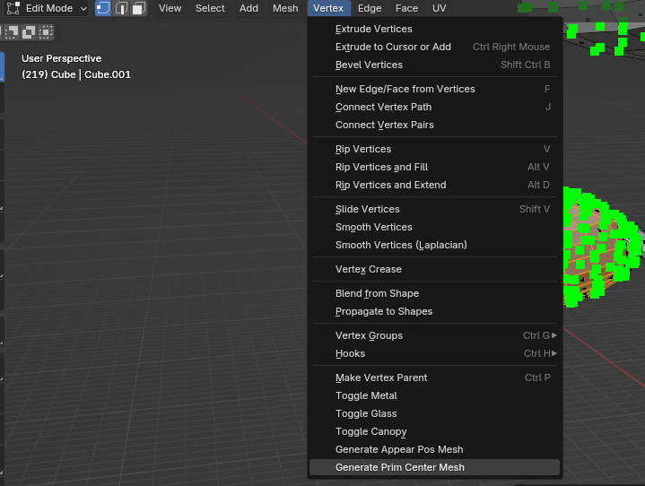

Trees in Tiny Glade
Trees in Tiny Glade are not ordinary 3‑D objects. They have their own loading rulesand shaders because they have to behave correctly with the seasons. This page explains how the system works, how tree meshes are stored, and walks you through creating your own using the Blender addon.
Forms and Level‑of‑Detail
There are three main tree models in the base game, each with its own set of LODs, plus one “naked” variant used for olden (no leaves). When the camera gets far from a tree, the engine swaps in progressively simpler meshes so that performance stays smooth.
Trees are not loaded the same way as normal meshes. The logic that chooses a mesh based on the current season lives in the rendering code; in the olden season the naked tree model is used.
Registration and Shaders
Trees don’t appear in nani_mesh.ron like generic meshes. Instead they are defined in the
prefab/ folder and the engine uses a special shader that knows how to decode the
vertex colours described below.
Info
You can register additional trees and load them via the mod tools, but that is beyond the scope of this document. The process is very similar to adding any other prefab; refer to the modding documentation for details.
JSON Format and Vertex Attributes
A tree is stored on disk as a JSON file, just like other meshes. However, the engine expects some unusual vertex attributes:
- Colour channel:
- Red → U coordinate of a hidden UV map
- Green → V coordinate of the hidden UV map
- Blue → flag:
1= trunk,0= canopy

appear_pos– In my comprehention, it's thethe center point of each quad used for billboard rendering. The game uses this to place the billboards correctly when drawing distant trees. (Tom, if you can add a better description here, please do.)prim_center– similar toappear_posbut tied to the original vertex position. It isn’t well‑documented; feel free to write a few sentences explaining its purpose.
Blender Add‑on (v1.3+)
Version 1.3 of the Tiny Glade Blender addon adds support for trees on both import and export.
- Import:
- Colours are interpreted automatically (UV + trunk/canopy flag).
- Two extra vertex sets (
appear_posandprim_center) are created as separate vertex clouds so you can see and edit them in Blender. - Export:
- A new tree pipeline collects the trunk mesh, canopy mesh, and the two helper clouds. You just choose which object corresponds to each attribute.
- Quad‑to‑triangle conversion is now non‑destructive, so you can export quad meshes directly; an edge split is applied for better rendering.
Info
The quad‑to‑triangle and the edge split step are now generic and applies to all meshes, not just trees.
Creating a Tree: Step‑by‑Step Tutorial
- Model the trunk. Keep it as a separate object from the leaves/canopy.
- Model the canopy. faces must not be connected to the trunk.
- Select the canopy object, switch to Edit mode and enable the Canopy option
in the addon panel. This sets the blue colour flag correctly.



- Create a UV map for the canopy. Each leaf quad should occupy one of the four corners of the 0–1 UV square (e.g. 0,0 → 0,1 → 1,1 → 1,0). This encodes the hidden billboard UV coords.
- Unwrap the trunk UVs and leave them as you would normally; they are used for the trunk texture.
- Generate
appear_posandprim_center. With the tree object selected, click Generate Tree Attributes in the addon so that the two vertex clouds are filled. - Verify the helper clouds. In viewport, show them to make sure they line up with the
geometry.

- Export the tree. Go to the export menu, choose the tree pipeline, and designate the
trunk, canopy,
appear_pos, andprim_centerobjects. - Import into the game. you can now set your new file in the
/decoratorsfolder with a name such asbranchy_tree_v1,branchy_tree_v2, orbranchy_tree_v3. - Test in Tiny Glade. Start the game And pray the sheep run till the end of the loading screen
 Enjoy making your own trees!
Enjoy making your own trees!